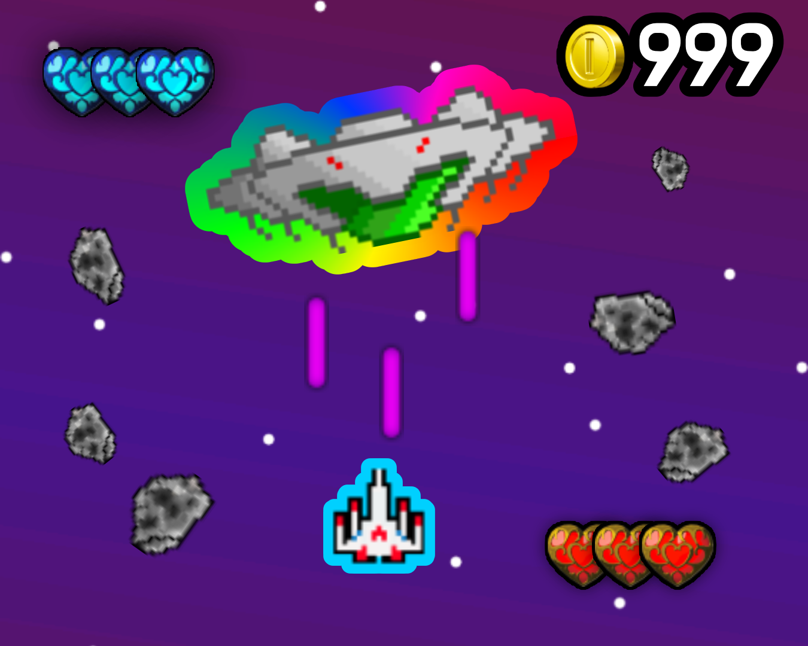
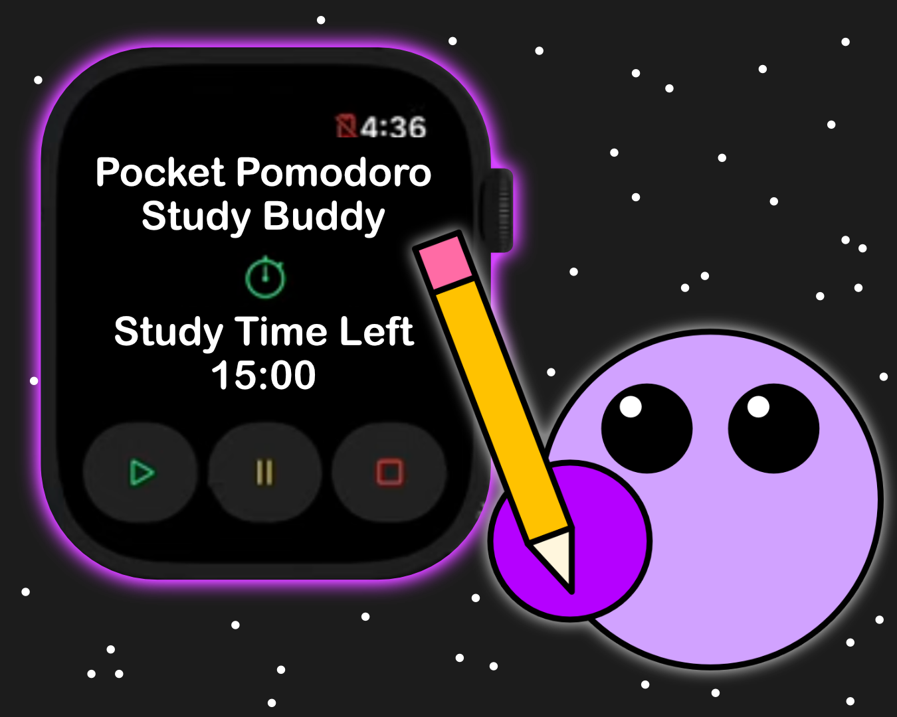
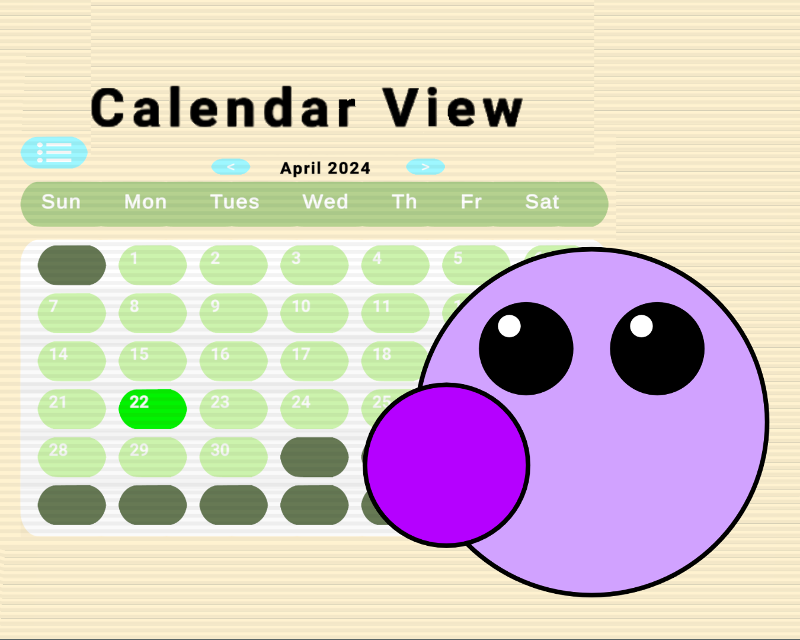

Galactic Defender
A retro-style arcade game built using Python and its very popular library pygame

Pocket Pomodoro
An Apple-Watch-Optimized Smartwatch Application to keep people on track using the Pomodoro study technique

Task Tracker
A Windows application with a front-end built with unity and back end written in C++

Data visualization with JavaScript
A web based way to view and analyze datasets using JS